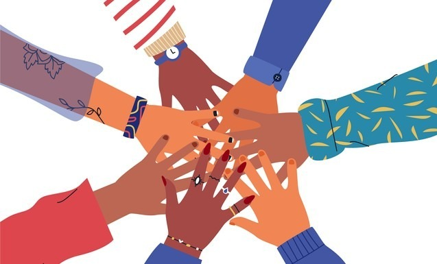

Soft Skills
Comunicare
Poate comunica încredere, fiabilitate, integritate și onestitate. Menținerea contactului vizual în timpul unei conversații este un semn că ambii interlocutori sunt pe deplin investiți: o declarație de încredere reciprocă și angajament.

Team Player
Abilitatea de a lucra într-o echipă este legată în primul rând de capacitatea de a recunoaşte competenţele celorlalţi

Negociere
Cel mai important in negociere este sa asculti,sa comunici si sa accepti compromisuri